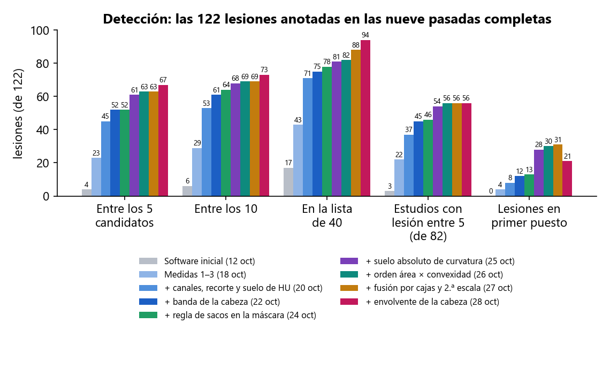
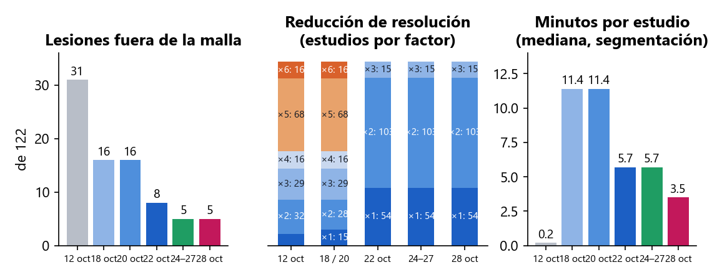
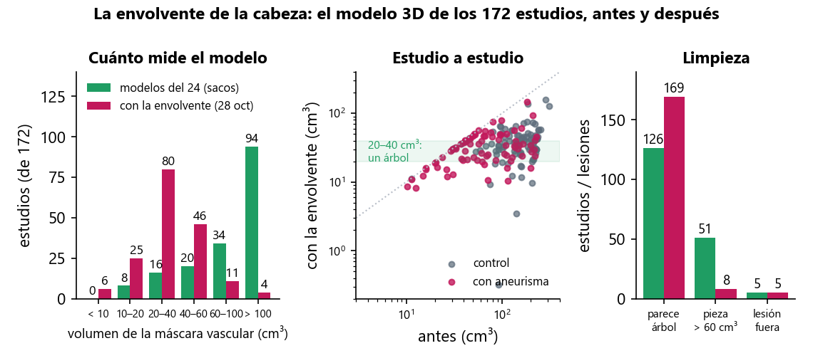
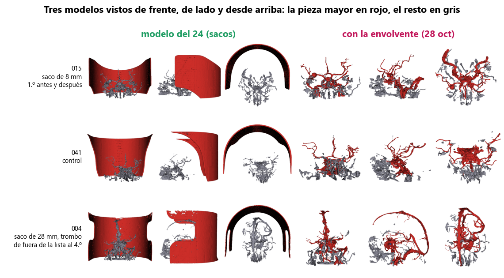
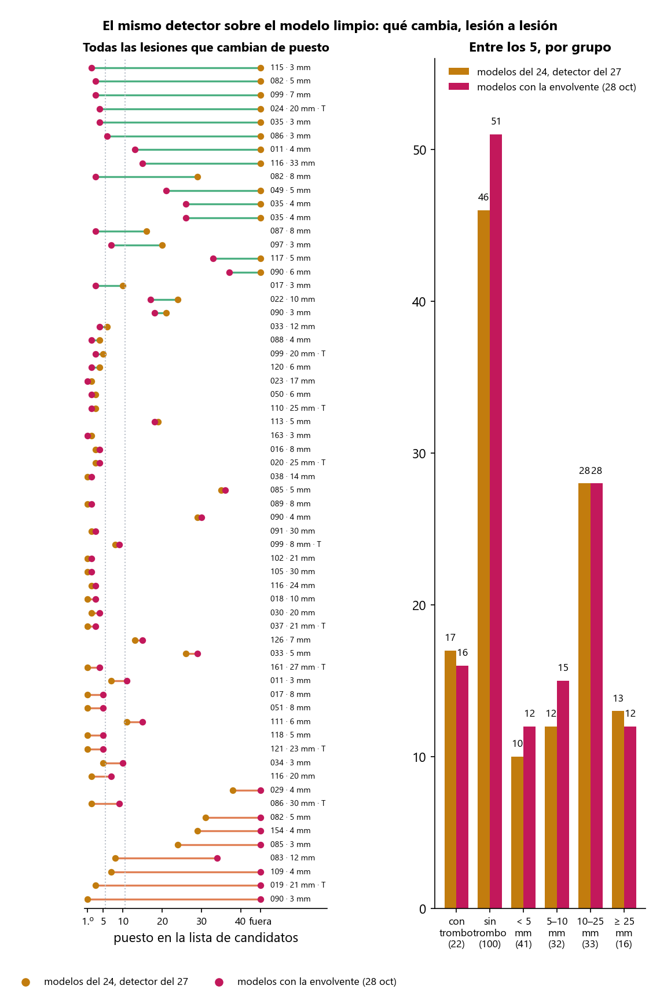
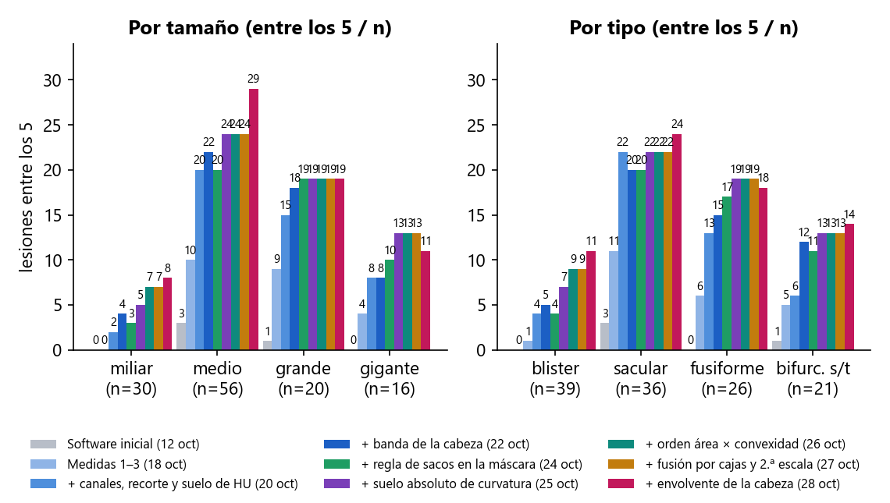
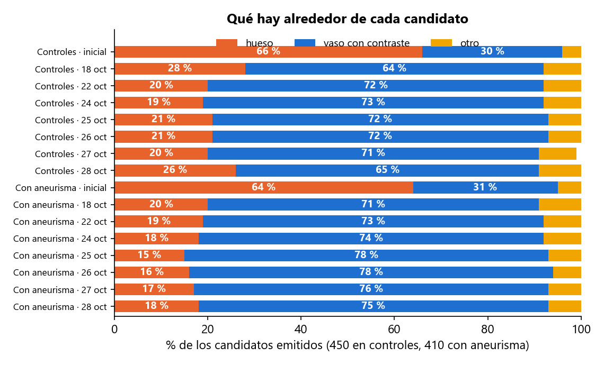
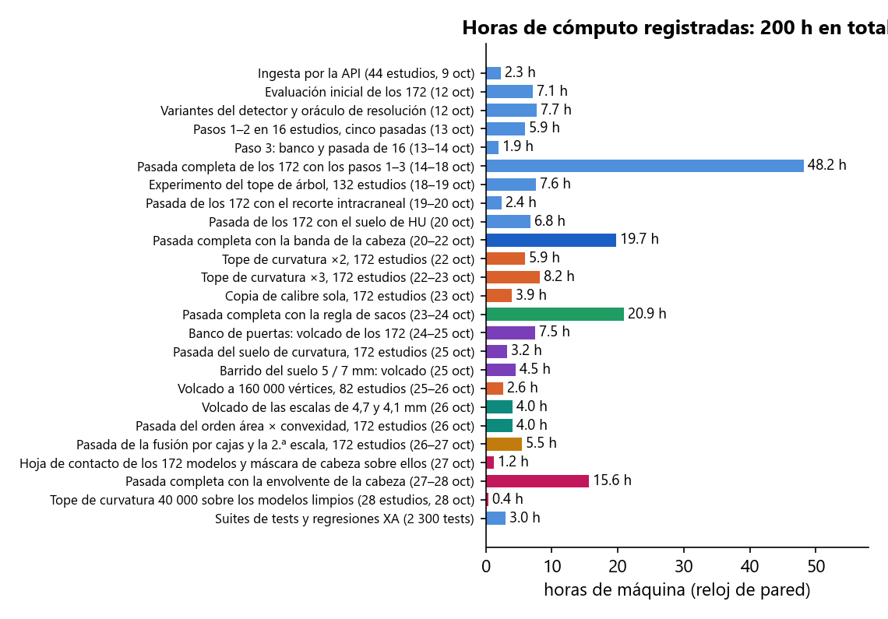

En dos semanas y media se ha incorporado el primer dataset público con verdad de terreno (172 angio-TC de cabeza con 122 aneurismas segmentados a mano), se ha medido el detector de Prospective sobre él once veces de principio a fin y, entre pasada y pasada, se han identificado y corregido las causas del fallo una a una, separando siempre lo que falla en la segmentación (la lesión no llega al modelo 3D) de lo que falla en la detección (está en el modelo y el detector no la coloca). Desde el 25 hay un banco que mide en minutos cualquier ajuste del detector sobre los 172 estudios sin volver a segmentar. El 25 probó 20 ajustes y adoptó uno (el umbral absoluto de curvatura: 52 → 61 entre los 5). El 26 probó 28 más en un día, descartó con cifras tres ideas que parecían prometedoras (el doble de resolución en la copia de curvatura, un tope según el tamaño de la pieza y un techo de densidad sobre los candidatos) y adoptó el orden de los candidatos por área × convexidad (la cúpula de un saco es casi toda convexa; una curva o bifurcación de vaso, no): de 61 a 63 entre los 5, de 28 a 30 en primer puesto, sin que bajara ninguna lesión. El 27 entran, juntas, las dos ideas del 26 que no bajaban nada pero tampoco movían la cifra: la fusión de regiones duplicadas según su tamaño (en vez de a 10 mm fijos) y una segunda escala de curvatura (esfera de 4 mm) cuyas regiones se añaden detrás de las de 6 mm. Confirmadas con una pasada real sobre los 172: los 63 entre los 5 y los 56 pacientes se mantienen, el primer puesto pasa de 30 a 31 y la lista larga de 82 a 88 (siete lesiones de 3 – 8 mm que el detector no veía ahora existen para él), a cambio de 30 s más de detección por estudio. El 27 y el 28 el frente ha sido la segmentación: al enseñar los casos se vio que los modelos 3D eran ruidosos, y una hoja de contacto de los 172 modelos guardados confirmó que el soporte de cabeza del escáner (una cuna o dos placas de 2 – 5 mm que superan el umbral de densidad) entraba en casi todos y en uno de cada cuatro era la pieza mayor. La regla «lo que no está dentro de la cabeza no es vaso» (la envolvente convexa de la cabeza, calculada en décimas de segundo, sin pesos) se aplicó a la máscara vascular y se midió con una pasada completa de 20 h desde el DICOM: el modelo pasa de 111 a 34 cm³ de mediana, 80 estudios quedan entre 20 y 40 cm³ (eran 16), 169 de 172 parecen un árbol (eran 126), y ninguna de las 122 lesiones pierde superficie. Sobre esos modelos limpios el mismo detector sube a 67 entre los 5, 73 entre los 10 y 94 en la lista, mantiene los 56 pacientes y baja la detección de 94 a 60 s; el precio es el primer puesto, de 31 a 21: con la mitad de vértices (el soporte ya no está) la copia de curvatura del detector se diezma la mitad y las cúpulas grandes se parten en dos o tres candidatos. Se midió si un tope más bajo lo devolvía: devuelve los primeros puestos pero vuelve a perder las lesiones pequeñas y trombosadas que el modelo limpio había traído, así que el tope se queda. La envolvente entra; el primer puesto, que nunca se ha podido prometer, queda como coste declarado.
| Fecha | Trabajo | Resultado | Estado |
|---|---|---|---|
| 8 oct | Auditoría de seguridad de la API y el acceso; búsqueda de datasets DICOM con verdad de terreno | 7 hallazgos corregidos el mismo día. Elegido Zenodo 15697196 (CC-BY): el único con DICOM + segmentación manual del aneurisma | hecho |
| 9 oct | Ingesta de 44 estudios por la API, como un usuario, y banco de medida del detector | Primer dato real: 2 aciertos de 34 aneurismas en angio-TC | hecho |
| 12 oct | Evaluación de los 172 estudios con el software tal cual, ajustes del detector y un oráculo de resolución | 4 de 122 lesiones entre los 5; 31 fuera del modelo; tres causas medidas | hecho |
| 13 – 14 oct | Medidas 0 – 3: red de seguridad 3DRA, resolución nativa donde importa, hueso fuera de la máscara en TC, detector sobre la malla limpia | Diseñadas y medidas sobre 16 estudios; 3DRA sin cambios | hecho |
| 14 – 18 oct | Primera pasada completa de los 172 con las medidas 1 – 3 (48 h de máquina) | 23 de 122 entre los 5; 16 fuera del modelo; dos poblaciones de estudios identificadas | hecho |
| 18 – 19 oct | Canales de grosor en los 132 estudios de cabeza y cuello (7,6 h); criterio absoluto en controles | Entre los 5 de 5 a 13 en esos estudios; regla cambiada. El criterio absoluto se midió y no existe | hecho |
| 19 – 20 oct | Recorte a la región intracraneal antes de detectar; suelo de densidad; dos pasadas de detección de los 172 sobre las mallas guardadas | 44 y después 45 de 122 entre los 5, 8 en primer puesto, ninguna lesión baja | hecho |
| 20 – 22 oct | Banda de la cabeza antes de segmentar; cuarta pasada completa de los 172 desde el DICOM (19,7 h); fusión con los 321 cambios del compañero y publicación en master | 52 de 122 entre los 5, 12 en primer puesto, 45 de 82 estudios, 8 fuera del modelo, 5,7 min por estudio | hecho |
| 22 – 23 oct | Experimento del tope de curvatura (×2 y ×3, 14 h) y la pieza del calibre sola (3,9 h), sobre las mallas guardadas | 44, 46 y 51 de 122 entre los 5, frente a 52. Reparten grandes ↔ pequeños. No se adoptan | descartado |
| 23 – 24 oct | Regla de sacos en la máscara vascular, con tests, y quinta pasada completa de los 172 desde el DICOM (20,9 h) | Fuera del modelo 8 → 5; 52 entre los 5, 13 en primer puesto, 78 en la lista, 46 de 82 estudios. Entra | hecho |
| 24 oct | La puerta de curvatura media, lesión a lesión, y prueba de bajarla en 3 estudios | No retiene a ninguna lesión: las que pasan mueren en el tope o en la fusión. No se toca | descartado |
| 24 – 25 oct | Banco de puertas: un volcado único de todas las regiones candidatas de los 172 modelos guardados (7,5 h de máquina, de noche) y evaluación de 20 ajustes del detector en 25 min | El banco reproduce los 122 puestos de la pasada del 24. 19 ajustes no mueven la cifra o la bajan; el suelo absoluto de curvatura la sube: 52 → 61 entre los 5, 13 → 28 en primer puesto | hecho |
| 25 oct | Pasada real de detección de los 172 con el suelo absoluto de curvatura, sobre los modelos del 24 (3,2 h) | 61 de 122 entre los 5, 28 en primer puesto, 68 entre los 10, 81 en la lista, 54 de 82 estudios. Coincide con el banco lesión a lesión. Entra | hecho |
| 25 oct | Barrido del suelo: esferas de 5 y 7 mm además de la de 6, con el mismo banco (4,5 h de volcado, evaluación en minutos) | 58 y 58 de 122 entre los 5, frente a 61 con 6 mm; las dos pierden los grandes trombosados que la de 6 recupera. Se queda 6 mm, y entra en el programa con su test | hecho |
| 25 – 26 oct | Fusión de regiones duplicadas según su tamaño (cinco formas, en el banco) y el doble de resolución en la copia de curvatura con el suelo nuevo (volcado de 82 estudios, 2,6 h; sola y unida a la actual) | La fusión por cajas no baja nada pero deja 61; la resolución doble sola da 57 y unida a la actual 62, sacando a un trombosado de 21 mm del top 5 y doblando el tiempo de detección. No se adoptan | descartado |
| 26 oct | Tope de resolución según el tamaño de la pieza y techo de densidad sobre los candidatos, simulados a partir de los registros (sin volcar nada) | Ningún umbral de tamaño pasa de 61 (el mejor reparto posible por estudio daría 64); quitar todo lo que apunta a hueso no sube ninguna lesión y baja tres. No se adoptan | descartado |
| 26 oct | Segunda escala del suelo de curvatura (esferas de 4,7 y 4,1 mm) sobre la misma malla, sola, unida a la de 6 mm y como segundo canal (volcado de 4 h, evaluación en minutos) | La unión 6 mm + 4,1 mm con fusión por cajas es la primera variante que no baja ninguna lesión (lista 81 → 89, primer puesto 28 → 30), pero deja los 61 entre los 5. No se adopta como palanca | medido |
| 26 oct | El orden del canal de curvatura: comparación de rasgos entre las regiones de lesión y las de vaso que van por delante, ocho claves de orden en el banco y pasada real de detección de los 172 con la mejor (4 h) | 63 de 122 entre los 5, 30 en primer puesto, 69 entre los 10, 82 en la lista, 56 de 82 estudios; ninguna lesión baja; 121 de 122 puestos iguales a los del banco. Entra en el preset de TC con su test | hecho |
| 26 – 27 oct | Fusión por cajas y segunda escala de curvatura, juntas, en el preset de TC con sus tests; pasada real de detección de los 172 (5,5 h, con una suspensión del portátil de por medio) | 63 de 122 entre los 5, 31 en primer puesto, 69 entre los 10, 88 en la lista, 56 de 82 estudios; 121 de 122 puestos iguales a los del banco. Entra. Detección 65 → 97 s por estudio | hecho |
| 27 oct | Revisión visual de los modelos 3D de los casos en primer puesto (al enseñarlos), medida de su limpieza en los 172 registros y hoja de contacto de los 172 modelos guardados (renders fuera de pantalla, tres vistas por estudio) | Mediana de 66 piezas por modelo; 46 de 172 no parecen un árbol; el soporte de cabeza del escáner entra en la mayoría y es la pieza mayor en uno de cada cuatro (004, 005, 015, 016, 017, 025, 039, 041…), unido al propio árbol en 016 y 017. Es segmentación, no detección | hecho |
| 27 oct | Regla de la envolvente de la cabeza en la máscara vascular, con sus tests; dos formas de aplicarla descartadas con cifras en un estudio (004) antes de la pasada | Poner aire fuera de la cabeza, o restringir antes de calcular los umbrales de tubularidad, vacía la máscara (004: 146 → 3 cm³, la lesión fuera del modelo): los umbrales de la receta son percentiles y el soporte los sostenía. Restringir después de los percentiles: 004 queda en 31 cm³, árbol, con la lesión en el modelo | hecho |
| 27 – 28 oct | Sexta pasada completa de los 172 desde el DICOM con la envolvente (20 h de máquina, con una parada por apagado del portátil), contraste modelo a modelo contra la pasada del 24 y detección contra la del 27 | Modelo: 111 → 34 cm³ de mediana, 80 estudios en 20 – 40 cm³ (eran 16), 169 de 172 parecen un árbol (eran 126), ningún recubrimiento de lesión baja, 5 fuera del modelo (igual). Detección: 67 de 122 entre los 5, 73 entre los 10, 94 en la lista, 56 de 82 estudios; primer puesto 31 → 21; 60 s por estudio (eran 94). Entra | hecho |
| 28 oct | El tope de la copia de curvatura sobre los modelos limpios (40 000 y 60 000 en vez de 80 000), medido sin segmentar en los 28 estudios cuyas lesiones cambian de puesto | 40 000 devuelve los 13 primeros puestos y baja la detección a 37 s, pero pierde 3 lesiones entre los 5 (pequeñas y trombosadas) y 4 en la lista; 60 000 pierde por los dos lados. El tope se queda en 80 000 | descartado |
| pendiente | Comprobación de la pantalla con un estudio del dataset | La aplicación está arrancada y el estudio elegido (036: saco de 13 mm en primer puesto por los tres canales); falta subirlo desde la interfaz con una cuenta. La lógica es la misma función en la API y en el banco, cubierta por tests | pendiente |
Zenodo 15697196: 172 angio-TC de cabeza (145 de ellas incluyen el cuello), 82 con aneurisma y 90 controles, con cada aneurisma segmentado a mano en un fichero STL. Son 122 lesiones: la mitad miden 5 mm o menos, 39 son «blister» de 1,3 – 3,6 mm, 16 son gigantes, 20 están calcificadas y 22 trombosadas. Es un conjunto difícil a propósito, y es el tipo de examen (TC de cabeza entera, con el hueso tocando los vasos con contraste) para el que Prospective no se había medido nunca: su detector se había calibrado sobre dos casos de angiografía rotacional 3D (3DRA), donde no hay hueso.
Dos medidas distintas, siempre separadas. Segmentación: la lesión «llega al modelo» si más de la mitad de la superficie que el radiólogo dibujó está a menos de 1 mm del modelo 3D que Prospective construye; si no llega, el detector no puede verla. Detección: la lesión cuenta como detectada si uno de los candidatos que la aplicación enseña está a menos de 5 mm o de su diámetro. «Entre los 5» es la lista que ve el clínico; «entre los 40» es la lista larga del banco, que dice si la lesión existe para el detector aunque quede atrás. Una medida entra en el código solo si, medida sobre los 172, no baja la segmentación ni la detección en ningún grupo que importe. Las medidas del 25, 26 y 27 no tocaban la segmentación (los modelos 3D eran los del 24); la del 28 es de segmentación: los 172 modelos son nuevos y la detección se mide sobre ellos con el detector del 27, sin tocarlo.
| # | Medida | Qué hace | Segmentación (antes → después) | Detección (antes → después) |
|---|---|---|---|---|
| 0 | Red de seguridad 3DRA (13 oct) | Regresión automática sobre los dos casos de referencia de 3DRA, ejecutada tras cada cambio. | Sin cambios en 3DRA tras cada medida. | Lesión en el primer puesto en ambos, tras cada medida. |
| 1 | Resolución nativa donde importa (13 oct) | La pasada reducida localiza el árbol; se vuelve a segmentar a la resolución del DICOM en una banda de 5 mm alrededor, por baldosas. | Fuera del modelo: 31 → 16. Coste: 10 s → 11 min por estudio. | Con 2 y 3: entre los 5, 4 → 23; en la lista de 40, 17 → 43. |
| 2 | Hueso fuera de la máscara en TC (13 oct) | Lo que supera 700 HU se quita antes de rellenar, con 1,5 mm de margen. En 3DRA no se aplica. | Pieza mayor del modelo: 760 → 196 cm³. Coste conocido: una pared calcificada pegada al cráneo se va con él. | Candidatos sobre hueso: 560 → 206 de 860; en controles, 66 % → 28 %. |
| 3 | El detector sobre la malla limpia (14 oct) | Regla absoluta de curvatura media en lugar del percentil y «la región convexa más grande primero». | — | Más lesiones entre los 5 y los 10 sin aumentar el hueso; seis variantes descartadas tras medirlas. |
| 4 | Canales de grosor también en cabeza y cuello (19 oct) | Los dos canales que miden el calibre del vaso solo corrían en mallas «árbol» pequeñas; ahora, siempre que la pieza mayor mida más de 20 mm. | — | Entre los 5: 23 → 31; en la lista, 43 → 52. Hueso en controles: 112 → 79 de 415. |
| 5 | Recorte a la región intracraneal (20 oct) | Las 122 lesiones están a menos de 121 mm del techo del modelo; los candidatos de los controles, a 284 mm. El modelo se queda con sus 140 mm altos antes de detectar. | — (el modelo no cambia; el detector mira solo la cabeza) | Entre los 5: 31 → 44; ganan 17, pierden 4. Detección 3 veces más rápida. |
| 6 | Suelo de densidad (20 oct) | Un candidato en aire o en partes blandas sin contraste (por debajo de −100 HU de media o de 200 de máximo) no es un aneurisma; se quita antes de elegir los 5. | — | Entre los 5: 44 → 45; primer puesto 6 → 8; ninguna lesión baja. 1 148 candidatos quitados de 7 647. |
| 7 | Banda de la cabeza antes de segmentar (20 – 22 oct) | 145 estudios son de cabeza y cuello (350 mm de alto) y se segmentaban reducidos por 2 a 6 por falta de memoria. Las 122 lesiones están a 54 – 120 mm bajo el cráneo: se segmentan solo los 150 mm bajo el techo del cráneo. | Fuera del modelo: 16 → 8 (recupera 11, pierde 3). Reducción: 68 estudios a ×5 y 16 a ×6 → ninguno por encima de ×3; 54 a nativo. 11,4 → 5,7 min por estudio. | Entre los 5: 45 → 52; entre los 10, 53 → 61; primer puesto 8 → 12; estudios 37 → 45 de 82. Suben 30 lesiones, bajan 22. |
| 8 | Tope de la copia de curvatura ×2 y ×3 (22 – 23 oct) no adoptada | El detector calcula la curvatura sobre una copia del modelo diezmada a 80 000 vértices. Se probó con 160 000 y con 240 000 sobre los mismos modelos del 22. | — (mismos modelos) | Entre los 5: 52 → 44 (×2) y 52 → 46 (×3); en la lista, 75 → 67 y 69. Gana 1 en ≥ 25 mm; pierde de 5 a 7 de menos de 10 mm. Detección 44 → 104 y 146 s por estudio. |
| 9 | La pieza del calibre, sola (23 oct) no adoptada | La pieza que mide el calibre del vaso, sola, sobre el modelo completo, con el detalle de curvatura intacto. | — (mismos modelos) | Entre los 5: 52 → 51; lista y top 10 iguales; estudios 45 → 46. Entran 3 grandes y trombosados, salen 4 pequeños y medianos. |
| 10 | Regla de sacos en la máscara vascular (23 – 24 oct) adoptada | Un aneurisma es una bola, no un tubo. Las bolas de 11 mm o más que están a 5 mm del árbol y no son hueso se pegan al modelo. | Fuera del modelo: 8 → 5. Entran 026 (50 mm, gigante: 2 → 91 % de su superficie), 121 (23 mm, trombo: 1 → 100 %) y 024 (20 mm, trombo: 33 → 74 %); ninguna lesión pierde cobertura. +6 % de tiempo. | Entre los 5: 52 → 52; entre los 10, 61 → 64; lista 75 → 78; primer puesto 12 → 13; estudios 45 → 46. Controles iguales: 90 de 90 con 5. |
| 11 | Las puertas del detector, una a una (24 – 25 oct) ninguna adoptada | Diecinueve ajustes de las reglas que aceptan o descartan una región y la ordenan: curvatura media a 0,6, fusión de regiones a 5 y 7 mm, lista de curvatura a 60 y 80, cinco órdenes distintos, compacidad a 0,15 y 0,10, convexidad a 0,40, mínimo de 4 puntos, sin suelo de densidad, anillo del cociente por radio, dos escalas de curvatura. Medidos sobre los 172 en el banco (minutos cada uno). | — (mismos modelos del 24) | Entre los 5: 52 → entre 46 y 56. Los seis que suben lo hacen por una lesión (la 020, 25 mm con trombo) o reparten; los órdenes alternativos y la compacidad baja pierden de 2 a 6. Las dos escalas de curvatura (56, y 25 en primer puesto) señalan el camino de la medida 12. |
| 12 | Suelo absoluto de curvatura (25 oct) adoptada | El detector forma sus regiones candidatas con «el 15 % más curvado de cada modelo»: un umbral relativo que, en una cabeza entera llena de vasos finos, dejaba en los sacos de 10 – 30 mm un parche de 10 – 40 puntos y 7 mm², no el saco. Ahora el umbral es absoluto: todo lo curvado como una esfera de 6 mm o menos forma región. En esos sacos la región pasa a ser el saco entero (100 – 500 puntos, 50 – 200 mm², a 0,3 mm de la lesión) y los tres canales del detector coinciden en él. | — (mismos modelos del 24; el modelo no cambia) | Entre los 5: 52 → 61; entre los 10, 64 → 68; lista 78 → 81; primer puesto 13 → 28; estudios 46 → 54 de 82. Ganan 15 lesiones (entran en la lista) y otras 14 suben al primer puesto; bajan 16, casi todas de 3 – 7 mm, 4 de ellas fuera de los 5. Con trombo entre los 5: 14 → 17; ≥ 25 mm: 11 → 13. Controles 90 de 90 con 5 (hueso 94 de 450, era 86). Detección 52 s por estudio (era 57). |
| 13 | Lo medido el 26 sobre el suelo nuevo (25 – 26 oct) ninguna adoptada | Cinco ideas para recuperar las 16 pequeñas que bajaron el 25: fusión de regiones duplicadas según su tamaño (cinco formas); el doble de resolución en la copia de curvatura, sola o unida a la actual; un tope de resolución según el tamaño de la pieza; un techo de densidad que quite los candidatos que apuntan a hueso; y una segunda escala de curvatura (esferas de 4,7 y 4,1 mm) sola, unida o como segundo canal. Veinte variantes, todas medidas sobre los 172. | — (mismos modelos del 24) | Entre los 5: 61 → entre 51 y 62. La fusión por cajas y la unión 6 + 4,1 mm no bajan ninguna lesión pero no mueven la cifra (alargan la lista a 83 y 89 y suben el primer puesto a 30); la resolución doble reparte (gana pequeñas, pierde trombosados grandes) y dobla el tiempo; el tope por pieza no separa (el mejor reparto posible daría 64); quitar el hueso no sube ninguna lesión porque 41 de las 61 que faltan no tienen ningún candidato, y quita tres. |
| 14 | Orden de los candidatos por área × convexidad (26 oct) adoptada | Con el suelo nuevo, 70 lesiones tienen una región que pasa todas las reglas, pero solo 45 quedan entre las 5 primeras del canal: delante van regiones de vaso con más área. Comparadas las 70 regiones de lesión con las 458 que van por delante de alguna, lo que más las separa es la fracción de superficie convexa (0,70 frente a 0,62) y la esfericidad (0,77 frente a 0,65): la cúpula de un saco es casi toda convexa; una curva o bifurcación de vaso, que también supera el suelo, no. De ocho claves de orden probadas, área × convexidad es la primera que gana sin perder nada; las que usan esfericidad suben más primeros puestos pero sacan a una lesión del top 5. | — (mismos modelos y mismas regiones; solo cambia el orden) | Entre los 5: 61 → 63; entre los 10, 68 → 69; lista 81 → 82; primer puesto 28 → 30; estudios 54 → 56 de 82. Ninguna lesión baja de tramo: suben 15 (034 y 163 entran en el top 5, 163 al primer puesto; 018, 118 y 084 pasan al primer puesto) y 7 bajan un puesto dentro de su tramo (023 y 086 del 1.º al 2.º). De menos de 5 mm: 8 → 10 de 41; miliares 5 → 7 de 30; blister 7 → 9 de 39. Controles 90 de 90 con 5 (hueso 94 de 450, igual). 121 de 122 puestos iguales a los que el banco predijo. |
| 15 | Fusión por cajas y segunda escala de curvatura (26 – 27 oct) adoptada | Dos regiones candidatas a menos de 10 mm se fundían siempre en una, y la de un saco de 4 mm desaparecía dentro de la del vaso vecino: ahora se funden solo si distan menos que el tamaño medio de sus cajas (mínimo 3 mm). Y además de las regiones «curvadas como una esfera de 6 mm o menos», el detector forma las «curvadas como una de 4 mm o menos» y las pone detrás en la misma lista, con las mismas reglas y el mismo orden. Las dos se habían medido el 26 sin pérdidas; juntas con el orden nuevo son la variante del banco que más alarga la lista sin tocar los 63. | — (mismos modelos del 24) | Entre los 5: 63 → 63; entre los 10, 69 → 69; lista 82 → 88; primer puesto 30 → 31; estudios 56 → 56. Entran en la lista 7 lesiones de 3 – 8 mm (017_2, de 3,5 mm, al 10.º); 012_2 y 107 suben al primer puesto; bajan 10: ocho un puesto dentro de su tramo (163, de 2,5 mm, del 1.º al 2.º) y dos en el borde (111 del 10.º al 11.º; 082_2 del 40.º fuera, mientras entran otras dos lesiones de ese estudio). Ninguna sale de los 5. Controles 90 de 90 con 5 (hueso 94 → 92 de 450). 121 de 122 puestos como predijo el banco. Detección 65 → 97 s por estudio. |
| 16 | La envolvente de la cabeza (27 – 28 oct) adoptada | «Lo que no está dentro de la cabeza no es vaso.» La cabeza es todo lo que no es aire; se le quita lo fino (una apertura de 4 mm separa el soporte, una lámina, de la cabeza, un bloque), se toma la pieza mayor y su envolvente convexa corte a corte (los senos y las órbitas son aire abierto al exterior que un relleno de agujeros no cierra). Se calcula sobre el volumen a 3 mm en décimas de segundo y la máscara vascular se restringe a ella, después de calcular sus umbrales de tubularidad como siempre (restringir antes vacía la máscara: los umbrales son percentiles y el soporte los sostenía; medido en 004). Sin pesos ni constantes nuevas; solo en TC. | Modelo: 111 → 34 cm³ de mediana; 80 de 172 entre 20 y 40 cm³ (eran 16); 128 → 15 por encima de 60 cm³; pieza mayor > 60 cm³ en 51 → 8; «parece un árbol» 126 → 169; vértices 387 000 → 167 000. Ninguna lesión pierde más del 5 % de su superficie; 5 fuera del modelo (igual). Las 4 máscaras que se vacían son controles con poco contraste cuyo «árbol» era soporte y tabiques de la base del cráneo; las 15 que siguen por encima de 60 cm³ son cráneo dentro de la cabeza. Segmentación 5,7 → 3,5 min. | Entre los 5: 63 → 67; entre los 10, 69 → 73; lista 88 → 94; estudios 56 → 56; primer puesto 31 → 21. Entran 9 (024, de 20 mm con trombo, de «sin región» al 4.º; 017_2, 035_4 y 115_2 de 3 mm; 082_1, 082_2, 087, 099_3, 033_2) y salen 5 (019 y 086_1, fusiformes trombosados de 21 y 30 mm; 034 y 090_2 de 3 mm; 116_2). De menos de 5 mm: 10 → 12; de 5 – 10 mm: 12 → 15; de 10 mm o más: 41 → 40. Controles 90 de 90 con 5; hueso en controles 92 → 115 de 450 (el cráneo que sigue dentro del modelo). Detección 94 → 60 s. |
| 17 | Tope de la copia de curvatura sobre los modelos limpios (28 oct) no adoptada | El detector calcula la curvatura sobre una copia del modelo diezmada a 80 000 vértices. Con el soporte fuera, los modelos tienen la mitad de vértices y el diezmado es la mitad de fuerte: las regiones de curvatura se afinan, las cúpulas de 14 – 30 mm se parten en 2 – 3 candidatos y 12 lesiones pierden el primer puesto frente a una curva de vaso a 30 – 90 mm. Se probó devolver el diezmado de antes bajando el tope a 40 000 y a 60 000, sobre los 28 estudios que se mueven. | — (mismos modelos del 28) | En esos 28 estudios: entre los 5, 27 con 80 000; 25 con 60 000; 24 con 40 000 (23 con el modelo del 24). Primer puesto 3 / 9 / 13 (13). Con 40 000 vuelven al primer puesto los sacos grandes (018, 037, 086, 099_2, 102, 121, 161…) y la detección baja a 37 s, pero 017_2 (3,5 mm), 024 (20 mm, trombo) y 035_4 (3 mm) pierden su región y 051 cae del 5.º al 13.º. Con 60 000 se pierde por los dos lados y los puestos saltan sin orden entre topes (087: 3.º, 19.º, 2.º). Es el reparto de la medida 8, al revés: no hay un tope que conserve las dos cosas. |
Herramientas que quedan: evaluación de los 172 fuera del servidor por el mismo camino que la API (reanudable, con lista larga y traza por región), banco del detector, banco de puertas (volcado único de todas las regiones de los 172 modelos y evaluación de cualquier ajuste en un minuto, comprobado contra la pasada real), análisis por lesión a partir de los registros, diagnóstico de la máscara fase a fase, comparación lesión a lesión entre dos pasadas, y la suite del backend: 2 300 tests. Nuevas desde el 27: hoja de contacto de los modelos guardados (renders fuera de pantalla, sin sesiones ni navegador), máscara de cabeza sobre los modelos guardados, reproducción de la máscara gruesa de un estudio sobre su volumen guardado (diagnóstico de 181), contraste modelo a modelo entre dos pasadas (tabla de los 172 en docs/zenodo-envolvente-volumenes-2026-10-28.csv) y el tope de curvatura sobre modelos guardados. Código publicado en master el 26 de octubre por la mañana (hasta el suelo de curvatura y el banco con todas sus variantes); el orden por convexidad, la fusión por cajas, la segunda escala, la envolvente, sus tests y los informes del 26 al 28, en local a la espera del commit y del push.

Detección. Las mismas 122 lesiones, el mismo criterio y la misma herramienta de medida en las nueve pasadas completas; solo cambia el software. Las del 20, 25, 26 y 27 reutilizan los modelos de la pasada anterior (solo detección); las del 22, del 24 y del 28 vuelven a segmentar desde el DICOM. La del 28 sube en entre los 5 (67), entre los 10 (73) y lista (94), mantiene los 56 estudios y baja en primer puesto (31 → 21): es el precio del modelo limpio, explicado en la medida 17.

Segmentación. Izquierda: lesiones que no llegan al modelo, de 31 a 5; la envolvente no mueve ninguna. Centro: cuántos estudios se segmentan reducidos y por cuánto (×5 y ×6 eran 84 estudios; desde el 22 el peor es ×3 y 54 van a resolución nativa; igual el 28). Derecha: minutos de segmentación por estudio (mediana): 5,7 → 3,5 el 28, porque la máscara vascular es un tercio y hay la mitad de superficie que construir.

La medida del 28, modelo a modelo. Izquierda: cuánto mide la máscara vascular de cada estudio; con el soporte dentro, 128 de 172 pasaban de 60 cm³ (94 de 100); con la envolvente, 80 quedan entre 20 y 40 cm³, que es lo que mide un árbol cerebral con contraste, y 15 siguen por encima de 60. Centro: cada estudio antes y después (escala logarítmica); ninguno sube; los que caen por debajo de 10 son cuatro controles con poco contraste cuyo «árbol» era soporte y tabiques de hueso (en 181, 16 de las 18 semillas de la máscara estaban en el soporte). Derecha: «parece un árbol» (pieza mayor de menos de 100 cm³ y menos de 3 mm de grosor) 126 → 169; pieza mayor de más de 60 cm³ 51 → 8; lesiones fuera del modelo 5 → 5.

Tres modelos del dataset tal como los construye Prospective, antes (izquierda) y después (derecha) de la envolvente; la pieza mayor en rojo. En 015 y 041 la pieza mayor era la cuna del soporte (174 y 140 cm³) y el árbol, gris, se trataba como «piezas pequeñas»; ahora la pieza mayor es el árbol (15 y 8 cm³). En 004 el soporte iba unido al árbol en una sola pieza de 112 cm³ y el saco de 28 mm con trombo quedaba fuera de la lista de candidatos; con la envolvente el árbol mide 18 cm³ y el saco entra en 4.º.

El mismo detector sobre el modelo limpio, lesión a lesión. Izquierda: las 62 lesiones que cambian de puesto, del que tenían el 27 sobre el modelo con soporte (ámbar) al que tienen el 28 (carmesí); verde la que sube, naranja la que baja. Arriba, las que entran desde fuera: 115_2 (3 mm) al 2.º, 082_2 (5 mm) y 099_3 (7 mm) al 3.º, 024 (20 mm, trombo) y 035_4 (3 mm) al 4.º. En el bloque central, las 12 que bajan del primer puesto al 2.º – 5.º sin salir del top 5 (102, 105, 116, 018, 037, 161, 017, 051, 118, 121): su cúpula aparece partida en dos o tres candidatos. Abajo, las 5 que salen de los 5 (019 y 086, fusiformes trombosados; 034 y 090_2, de 3 mm; 116_2). Derecha: entre los 5 por grupo: suben las de menos de 5 mm (10 → 12), las de 5 – 10 (12 → 15) y las sin trombo (46 → 51); bajan una las de 25 mm o más y las trombosadas.

Por tamaño y tipo, entre los 5. Los grandes se mantienen (19 de 20); los gigantes bajan de 13 a 11 de 16 (019 y 086, fusiformes con trombo, cuya región ya no es una cúpula); los medianos suben de 24 a 29 de 56, los miliares de 7 a 8 de 30 y los blister de 9 a 11 de 39, los saculares de 22 a 24 de 36. Miliares y blister siguen siendo el límite: los canales actuales no tienen con qué ver una lesión de 2 – 3 mm.

Los candidatos han dejado de apuntar al cráneo (26 % en controles, de 66 %), pero no a cero: la aplicación sigue devolviendo 5 candidatos en todos los estudios, incluidos los 90 sanos. Con el modelo limpio el hueso en controles sube de 92 a 115 de 450 (del 20 al 26 %): el soporte, que no era hueso ni vaso, ya no absorbe candidatos, y lo que queda dentro de la cabeza que no es árbol es cráneo (en 084, 123 y 180 la pieza mayor sigue siendo la bóveda, de 130 – 150 cm³). Ese cráneo es el siguiente frente de segmentación. Quitar todo lo que apunta a hueso se midió el 26 y no sube ninguna lesión: el hueso entre los 5 es un problema de presentación, no de puesto. El criterio para decir «ninguno» se buscó el 19 de octubre y no existe con las señales actuales.
Lo del 27 y el 28, en una frase: la receta de la máscara estaba calibrada en parte por la contaminación, y quitarla cuesta primeros puestos. Los umbrales de la máscara vascular (qué es semilla, hasta dónde crece) son percentiles de la tubularidad dentro del volumen candidato; el soporte, con tubularidad baja, era hasta el 76 % de ese volumen (004) y mantenía los percentiles bajos. Por eso las dos formas naturales de aplicar la envolvente vaciaban la máscara, y solo restringir después de los percentiles conserva la receta de siempre menos lo que no está dentro de la cabeza. El modelo resultante es el árbol en 169 de 172 estudios y ninguna lesión pierde superficie; el detector, que no se ha tocado, gana 4 entre los 5 y 6 en la lista, y pierde 10 primeros puestos porque su copia de curvatura, diezmada a un número fijo de vértices, ve ahora el doble de detalle. Bajar ese tope devuelve los primeros puestos y pierde las lesiones pequeñas y trombosadas recién ganadas: es la misma balanza de la medida 8, y se deja donde está. Queda apuntado para después que los percentiles como umbral de la máscara son la misma enfermedad que el percentil de curvatura que se cambió el 25.
Lo del 26, en una frase: las lesiones que faltan no están más abajo en la lista; no tienen candidato. De las 61 que no estaban entre los 5 el día 25, 41 no tienen ningún candidato en la lista larga de 40 y 20 están en ella. El orden solo puede actuar sobre las 20, y lo ha hecho con lo único que las distingue de los vasos que iban delante (la convexidad): dos entran, cinco suben al primer puesto, ninguna baja. Para las 41 restantes no hay regla de lista que valga: su región no se forma (4 – 5 puntos: 8), se forma pegada al vaso y no es compacta (9) o no es convexa en media (9); lo midieron las cinco ideas descartadas hoy, y todas repartían o no movían nada.
Lo del 25: las puertas no eran el problema; el umbral que forma las regiones sí. Desde el 18 de octubre, los motivos de fallo de las 44 lesiones que el detector no colocaba se contaban por puertas (compacidad 11, curvatura media 8, fusión 7, puntos 6, tope 6). El banco enseña que abrir cualquiera de esas puertas no cambia nada, porque lo que llegaba a ellas desde los sacos grandes era un parche de 7 mm², no el saco: el percentil de curvatura, que funciona en una angiografía rotacional de 100 cm³ sin hueso, en una cabeza entera señala los vasos finos y se come los sacos. Con un umbral absoluto (esfera de 6 mm), la región es el saco, y las puertas de siempre lo dejan pasar.
Todo se ha ejecutado en un portátil (Intel i7-8550U de 4 núcleos, 16 GB de RAM), un solo proceso a la vez porque dos procesos de VTK simultáneos agotan la memoria. La primera pasada completa tardó 48 h de reloj; las del 22 y del 24 vuelven a segmentar desde el DICOM y tardan 19,7 y 20,9 h; las de detección sobre modelos guardados tardan de 2,4 a 8 h. El banco de puertas costó 7,5 h de volcado (de noche) y desde entonces cada ajuste se mide en un minuto; las pasadas de confirmación del 25, 26 y 27, 3,2, 4,0 y 5,5 h; los volcados del 26 (resolución doble, escalas finas), 6,6 h; la pasada completa de la envolvente, 15,6 h de máquina (20 h de reloj con una parada por apagado del portátil), y los dos topes sobre 28 estudios, 0,8 h. Las 200 h del gráfico son horas de máquina registradas en los ficheros de resultados, no horas de persona.
Coste por estudio con todas las medidas adoptadas: unos 4 min y medio de mediana (3,5 de segmentación y 60 s de detección; el 20 de octubre eran 12, el 27 eran 7,5). La envolvente abarata las dos partes: la máscara vascular es un tercio y la superficie que se construye y se analiza tiene la mitad de vértices (387 000 → 167 000 de mediana). La medida del 27 había encarecido la detección de 55 a 94 s; la del 28 la deja en 60.

| # | Qué | Por qué y qué decide | Esfuerzo |
|---|---|---|---|
| — | Suelo absoluto de curvatura en el programa | En el preset de TC del detector desde el 25 (min_gauss_curvature = 0,028 mm⁻², esfera de 6 mm), con su test; publicado en master el 26 por la mañana. 3DRA no lo usa. | Hecho |
| — | Orden por área × convexidad en el programa | En el preset de TC del detector desde el 26 por la tarde (order_by = "area_pgf"), con su test; 3DRA conserva su orden (regresión verde). Pendiente de commit y push. | Hecho |
| 1 | Barrido del suelo: 5 y 7 mm hecho | Medidas las tres esferas sobre los 172: 7 mm da 58 entre los 5 (y 32 en primer puesto), 5 mm da 58 (y la lista más larga, 82); las dos dejan caer los grandes trombosados 004 y 019 que la de 6 mm recupera. 6 mm no era solo el primer valor probado: es el mejor de los tres en las medidas de cabeza. | Hecho (4,5 h de máquina) |
| 2 | Fusión por cajas y segunda escala, juntas hecho el 27 | Adoptadas juntas por decisión del 26 por la noche, con sus tests, y confirmadas con una pasada real de 5,5 h: 63 entre los 5, 31 en primer puesto, 88 en la lista; 121 de 122 puestos como el banco. Coste: +30 s de detección por estudio. | Hecho |
| 3 | Limpiar el modelo 3D: el soporte hecho el 28 | Hoja de contacto de los 172 modelos, regla de la envolvente de la cabeza con sus tests, pasada completa de 20 h y contraste modelo a modelo: 169 de 172 modelos parecen un árbol, ninguna lesión pierde superficie, 67 entre los 5 (de 63), primer puesto 31 → 21 (medido y explicado; el tope que lo devolvería pierde lesiones). | Hecho |
| 4 | Limpiar el modelo 3D: el cráneo que queda dentro siguiente | En 15 estudios el modelo sigue por encima de 60 cm³ y en 084, 123 y 180 la pieza mayor es la bóveda craneal entera (130 – 150 cm³): hueso que la máscara de hueso de 700 HU no quita (contraste pegado al cráneo, cráneo fino o poco denso). Es también lo que sube el hueso en los controles (92 → 115 de 450). Primero, renders de los 15 y medida de qué densidad y qué grosor tiene ese hueso; después, una regla geométrica (el cráneo es una cáscara, el vaso un tubo) medida como siempre con una pasada completa. | Un día de revisión + 20 h de pasada |
| 5 | Los percentiles de la máscara vascular después | Los umbrales de semilla y crecimiento de la máscara son percentiles de la tubularidad dentro del volumen candidato, y el 27 se vio que el soporte los sostenía: la receta estaba calibrada en parte por la contaminación. Con el modelo limpio, un umbral absoluto (como se hizo el 25 con la curvatura del detector) sería más defendible; se mide en el banco de máscara sobre estudios sueltos antes de ninguna pasada. | Días |
| 6 | Cáscaras parciales (093) | Los dos sacos de 093 no son bolas sino cáscaras: la regla de sacos no los ve por construcción. Pide una regla distinta y hay que medir primero cuántas lesiones del dataset son así: hoy se sabe de 2. | Días + 20 h si exige pasada |
| 7 | Comprobación en la aplicación | Entrar, reanudar un estudio del dataset y verificar que la pantalla cuenta lo mismo que el banco (puestos, confianza, tejido). La función de detección es la misma en la API y en el banco y está cubierta por tests; falta verlo en pantalla. | Media jornada |
| 8 | Honestidad de la pantalla | Mostrar el tejido alrededor de cada candidato y el vóxel efectivo del modelo; decir que la lista siempre tiene 5, que no hay veredicto de ausencia y que una lesión trombosada se ve por su luz. | Días |
| 9 | Rendimiento | Paralelizar las baldosas de la banda nativa y revisar el tope de memoria en un servidor con más RAM: de 4,5 min por estudio a 2 o menos. | 1 semana |
| 10 | Blister y miliares | Un canal nuevo (calibre a lo largo de la línea central, o detección sobre el volumen). Es investigación; mientras tanto, documentar que no se detectan. | Alto |